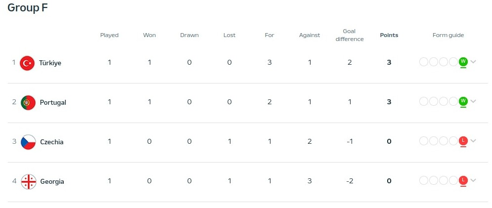
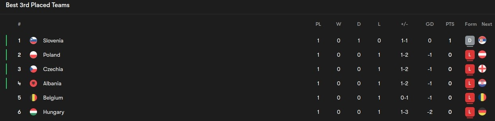

Day 5
Table of Contents
Day 5
Portugal v Czechia
Robust Czechia. Portugal never give in. Unlucky Hranac. Well this makes sure all the big favorites for this tournament have all won so far but it was a topsy turvy one I got to say from Martinez this time which makes me worried on how they’ll fare against Turkey. Let’s see. Until then, the reaction
1st Half
We start with a fairly equal game where Czechia and Portugal have their opportunities with Czechia finding a Portugal player instead of the goal and later on in minute 7 Leao puts in a perfect cross but Ronaldo sadly didn’t time his jump well, and it was wide. We move 4 minutes later where Leao gets all the way to the byline, but the cross only found a Czechia player in the box. The next one was minute 21 where Dias took a speculative effort on the edge of the box which was blocked easily. 4 minutes later, Bernardo Silva finds Bruno on the counter, and he slipped in a beautiful ball, but Leao just couldn’t get on the end of it. Bruno had another brilliant pass to cook up next as 10 minutes later he found a lovely through ball to Ronaldo but Stanek was equal to it, rushing out and thwarting it and Vitinha’s long range effort was easy to save. A few seconds later Ronaldo tried to tee up Vitinha cleverly, but he was bodied and the ball was blocked for a corner rather easily. There was a final chance in the half where Ronaldo got it on the right from Cancelo, but his quick shot was saved by Stanek and the rebound fell in a nonthreatening position.
2nd Half
We move first to minute 54 where Dias of all people puts in a good cross from the right, but the header by Ronaldo was blocked brilliantly. We got a bit of a nostalgia trip 2 minutes later when Cancelo was tripped up outside the box for a free kick which was in the Ronaldo range, but his shot was close to Stanek even if it was on target. The rain was also starting to pour down just like in the Turkey Georgia match yesterday. The breakthrough came not for Portugal but for Czechia when at minute 61 where a cross from the right was defended well and then the Czechia player on the left sent another one in which was blocked again and it fell to Coufal who found Provod who unleashed a first time shot which found the left side of the goal perfectly. It was a combination of Dalot(Why the hell did Eggman decide to play him as a CB I will never know) not going after the second ball and Costa didn’t pull himself centrally given the ball was teed up outside the box. That’s how I see it. But Portugal never gave in as around 6 minutes later Vitinha played B. Silva in and got it back before he played a great cross towards Mendes who headed it in and a massive error from Stanek only parrying the header from Mendes to the unlucky Hranac who had a disastrous game which started with this own goal and Portugal were level. Portugal were trying and around 3 minutes later they pressed Czechia and got the ball back and B. Silva was teed up, and he hit a shot straight at Stanek. There was another shot in minute 77 from Vitinha but it never looked threatening and Stanek managed to save it getting down low. Portugal weren’t out of the woods yet because Czechia did attack and it showed in minute 80 where down the right the ball was played in a set up for the player but the defense blocked it out and the loose ball fell to Soucek who dragged his shot wide unfortunately. On closer inspection, it seemed to have defelected off Dias. Portugal thought they finally found a winner when B. Silva found Cancelo and he played a brilliant cross to the head of Ronaldo who found the post but the rebound was bundled in by Diogo Jota. However, on close inspecttion the semi-automated offside system flagged it as offside against Ronaldo sadly so it was ruled out. I got to say these offside calls being semi-automated is so much quicker than what I’m used to. However, the breakthrough finally came when Eggman decided to bring on someone who can create, bringing on the likes of Neto and Conceicao and that’s what they did. Neto drove down the line and put the cross in and Hranac made his second blunder slipping and letting the ball through and an unmarkd Conceicao bundled it home after both Hranac and Stanek were wrong-footed. The celebrations were crazy and of course Conceicao was booked for taking his shirt off. Rules are ruled I guess. And in the end, Portugal held on for the points.
Player of the Match - Vitinha
A really composed performance in the middle of the park from him. I remember he went to PSG and I didn’t know the hype. He was calm and assured on the ball despite the lack of a physical presence(It’s not always a bad thing, and that’s he proved that to me). Really well done
Lineups
Portugal
Czechia
Group Standings after Matchday 1
Group A
Group B
Group C
Group D
Group E
Group F

Battle of the 3rd placed teams so far
